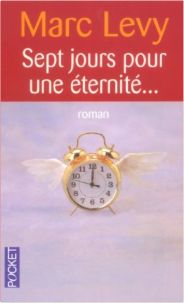

où es-tu ?marc lévy où es-tu ?marc lévy  Dans Et si c'était vrai..., Marc Levy faisait vivre des fantômes ; dans Où es-tu ?, les fantômes sont toujours là, mais ce sont ceux des rendez-vous manqués entre Philip et Susan. Ils ne faisaient qu'un, jusqu'à ce que Susan décide de s'engager dans une organisation humanitaire au Honduras, et que leurs vies se séparent. Pour toujours, ou presque : des lettres, quelques rencontres furtives à l'aéroport continueront à entretenir la flamme, vacillante, mais tenace. Aussi, quand on demande à Philip d'honorer une promesse qu'il a faite à Susan, il n'hésite pas une seconde. Et pourtant, quelle promesse... sept jours pour une éternité...marc lévy Marc Levy, roi du best-seller depuis Et si c'était vrai..., est de retour avec Sept jours pour une éternité ! San Francisco aujourd'hui. Lucas est le genre beau brun ténébreux un peu vénéneux sur les bords ; Zofia est une belle plante ingénue à qui on donnerait le Bon Dieu sans confession. À qui s'en remettre pour que ces deux-là se rencontrent ? Au destin, forcément, qui s'en charge aux alentours de la quarantième page. Tous deux sont envoyés du ciel : Lucas est le délégué sur terre du diable, ici nommé le Président, et Zofia l'émissaire de Monsieur, c'est-à-dire Dieu en personne. Lucas et Zofia vont jouer sur le plan singulier la partie que le diable et Dieu jouent à l'échelle universelle. Le diable a plus d'un tour dans son sac et Dieu sait tout, par définition. Le seul impondérable c'est ce fichu Destin qui pousse page après page Lucas dans les bras de Zofia et fait croître entre eux un attachement très spécifique aux humains : l'amour. |


 Made with Delicious Library
Made with Delicious LibraryNancy, State zipflap congrotus delicious library Thomas, Julien